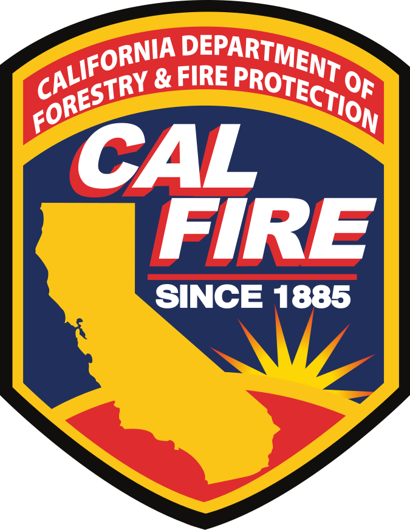

1. Funding Analysis#
The Business of Forest Health Is Booming: An Analysis of CAL FIRE’s Business and Workforce Development Grants
Updated to include 2024q1 grants
1.1. Findings#
To better understand the geographic distribution, success rates, and funding gaps/needs, the Forest Business Alliance undertook a preliminary study examining CAL FIRE’s Business and Workforce Development Grants from the first quarter of 2022 through the third quarter of 2023 (new data and analysis will be added when available). The initial analysis of CAL FIRE’s Business and Workforce Development Grants Program found the following:
More funding is needed for the Program; funding requests or needs far outstrip the grant funds awarded. As of Q1 2024, approximately $82 million in requests were funded, but the total requests were nearly $330 million. Sustainable infrastructure to process wood biomass in California and workforce development are critical elements of the Roadmap to a Million Acres.
The top 10 grant-receiving counties in order were Tuolumne, Shasta, Plumas, Tulare, Humboldt, Yolo, Placer, Siskiyou, Fresno, and Mariposa Counties.
The counties that have not yet received funds are Colusa, Del Norte, Glenn, Imperial, Inyo, Kern, Kings, Merced, and Santa Barbara. Imperial is the sole county not making a funding request (and unlikely to do so given its landscape dominated by desert and agriculture)
The largest proportion of grants awarded as of March 2024 went to the Sierra Cascade (64%) and North Coast (30%)regions. The Central Coast (5%) and Southern California (1%) were far behind, although the Central Coast increased by two percentage points and Southern California by 0.5.
The counties with the highest grant success rate (proportion successfully funded or awarded/requested) were Stanislaus, Sutter, Solano, Siskiyou, Modoc, Humboldt, Alpine, Sacramento, Mariposa, and Lake counties. However, a bivariate analysis simultaneously examining requested and awarded amounts showed that the most successful counties (high amount awarded with the low amount requested) were Ventura, Alpine, San Francisco, Sacramento, and Sutter Counties. To increase the analysis’s accuracy, the applicants’ project locations need to be more precise. Precise location data for applicants and grantees would also help analyze counties and regions with the most need, e.g., disadvantaged communities.
1.2. Background#
Prior to European settlement, fires were commonly utilized throughout California by Tribal communities as a tool for managing food, game, disease, and community safety. Approximately 4.4 million acres burned annually in California before 1800 [SMC07]. This acreage is far more than in recent years but likely differs in the total acres burned at high severity. Fast forward—fire suppression, severe drought, and climate change have created forest ecosystems well outside their natural conditions, making them prone to severe wildfires and negatively affecting habitats and communities.
Fig. 1.1 Simplified forest health theory of change.#
This century’s increase in large fires has underscored the urgent need for forest health projects. These projects aim to thin unhealthy forest stands and reintroduce fire into forested ecosystems (Fig. 1.1). However, they have also created a new challenge—excess wood and biomass that pose additional wildfire risks. California is in dire need of more infrastructure and workforce capacity to manage this situation effectively. The USDA Forest Service has the Wood Innovations Grant Program to encourage wood utilization. At the state level, CAL FIRE created the Wood Products and Bioenergy Program with the first grants awarded in 2022. Both programs aim to fund projects that process woody biomass and build capacity for work in the woods.
The Forest Business Alliance conducted an initial study on where the funds went to analyze patterns and identify areas of potential future need or funding focus.
1.3. Analysis#
The initial funding analysis examined awards by county from the 1st quarter of 2022 to the 3rd quarter of 2023 (Fig. 1.2).
1.3.1. Awarded#
The darker green counties indicate a higher amount awarded from CAL FIRE’s Business and Workforce Development Grant Program. The total amounts (1,000s $USD) are normalized by each county’s total square kilometers of forest (total awarded/sq. km forest).
Fig. 1.2 Awarded grants by California County. Numbers in thousands $USD.#
Not surprisingly, the highest grants/square km of forest are in the north state, dominated by the Sierra Nevada and North Coast counties (Fig. 1.3). Surprisingly, some agriculturally dominant counties rank highly, e.g., Yolo, partly because large bioenergy projects were funded in the county.

Fig. 1.3 Business & Workforce Development grant funding in Northern California.#
As of autumn 2023, only two counties in Southern California had projects with funding: San Luis Obispo and Ventura . However, this changed substantively in the 2024 first quarter grant round when all but Santa Barbara, Kern, and Imperial Counties had received funding (Fig. 1.4). Much of Southern California is chaparral and desert, and fire mitigation in this region is focused more on preventing ignition sources rather than thinning forests or processing wood products. And Imperial County is unlikely to apply for funding, so as of 2024, that only leaves two counties in Southern California without funding from this program.

Fig. 1.4 Grant funding in Southern California.#
1.3.2. Bivariate#
A bivariate analysis querying the data by total requests and awards paints a slightly different picture than the awards analysis (Fig. 1.5). Where the success rate is the relationship between funded and requested grants, the lightest shades tend to indicate low success rates, whereas the light blue to dark purple indicates counties with high grant success rates.
Fig. 1.5 Bivariate analysis comparing amounts of requested to awarded grants.#
Fig. 1.5 reveals some Southern California counties have requested grants but not been successful (e.g., San Luis Obispo, Kern, Orange, Riverside), and Ventura has a high success rate (high awarded to requested). Sacramento, Sutter, and Alpine Counties, shown in light blue, are similar high success rate counties, whereas counties such as Tulare, Plumas, and Shasta have received a large amount of funding and have also made many requests.
1.3.3. Gaps#
The total funding requests and awards by county show the divide between the northern and southern portions of the state(Fig. 1.6). The largest number of grants requested and awarded were in the Sierra Cascade Region. Nevertheless, the totals do not explain grant and project quality within the region. For instance, Inyo, Kings, and Merced have not funded any projects. The Forest Business Alliance addresses the lack of capacity in each entity’s ability to apply for grants to strengthen sustainable forest businesses and process more wood to ultimately increase forest health across the state.

Fig. 1.6 Stacked bar chart of requested and awarded grants by Wildfire Task Force Region and county.#
Funding by project type showed the most funding for workforce development training, biomass, transportation, and equipment projects (Fig. 1.7). Business development, marketing, and thinning projects were the least funded project types.
{kind=link}
Fig. 1.7 Awarded grants by project type.#
The number of unfunded projects by county reveals interesting patterns (Fig. 1.8). Some counties with the most unsuccessful applications are in the Sierra Cascade Region, e.g., Tuolumne, Shasta, and Plumas. Counties with low success rates submitted fewer proposals, e.g., Inyo, Kings, and Alpine.

Fig. 1.8 Unfunded requests by California County.#
1.4. Next#
The Forest Business Alliance will continue to add new projects to the Business and Workforce Development funding analysis database as applications are submitted and awards granted. We recommend the following:
More accurate project locations, e.g., latitude/longitude points, should be added to reflect where the funding is directed and examine the relationship between forest health and wood products businesses.
As more projects are funded through subsequent grant rounds, how do the funding success rates change geographically?
More analysis is needed to determine the reasons for the county and regional differences. Is it organizational and business capacity? Is it more related to capabilities to create strong projects and proposals? Could it be something more pervasive, such as regional economic differences or available institutional support for potential applicants?
Given the need for wildfire mitigation in the state, the bottleneck of processing biomass in a sustainable manner, and the mismatch in requested vs. funded businesses, we highly recommend the state consider increasing funding for this valuable program.
1.5. Data#
The proposal data is freely available on CAL FIRE’s Wood Products & Bioenergy website. To conduct the analysis, we removed statewide grants since they could not be placed geographically. For projects covering multiple counties, we averaged the total requests and awards across each county identified for the project. The data was compiled in Excel and then joined to a county spatial (California Tiger Census layer) and a vegetation layer (Calveg) to create the spatial database. The spatial analysis was completed using ArcGIS Pro. See Local Bivariate Relationship for an explanation of the bivariate analysis tool. Don’t hesitate to contact us at forestbusinessalliance@gmail.com for any questions or feedback.
1.6. Acknowledgements#
Funding for the Forest Business Alliance is provided by the CAL FIRE Business and Workforce Development Grant Program. CAL FIRE’s Wood Products and Bioenergy Program manages the BWD grants and works to maintain and enhance California’s wood products infrastructure to support healthy, resilient forests and the people and ecosystems that depend on them.
The Forest Business Alliance provides technical assistance, workshops, and a peer-learning network to increase local and regional capacity for California wood products and forest health. Funding for this project is provided by CAL FIRE’s Business and Workforce Development Grants.
{kind=link}